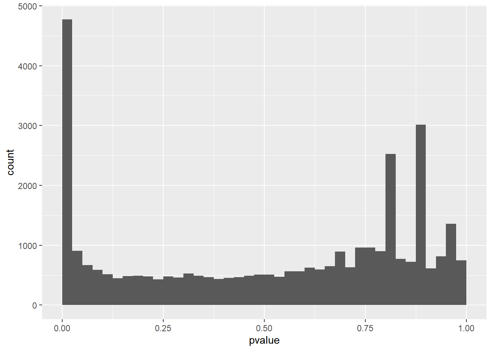
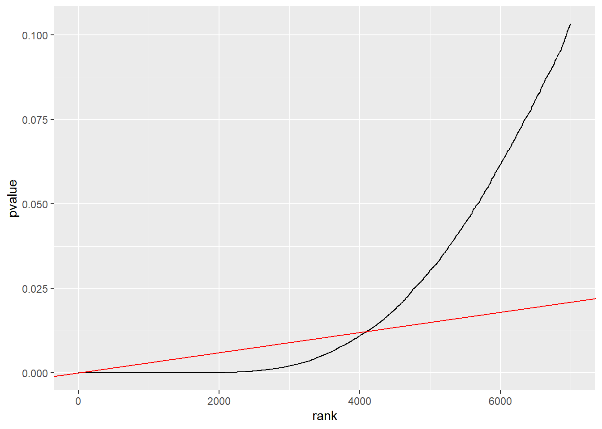

library("DESeq2")
library("airway")
library("tidyverse")
data("airway")
aw = DESeqDataSet(se = airway, design = ~ cell + dex)
aw = DESeq(aw)
# This next line filters out NA p values from the dataset
awde = as.data.frame(results(aw)) |> dplyr::filter(!is.na(pvalue))12 Multiple Hypothesis Correction
There are a number of methods for transforming p values to correct for multiple hypotheses. These methods can vary greatly in how conservative they are. Most methods are test agnostic, and are performed separately after the hypothesis test is performed.
It is important to keep in mind that the transformed thresholds or p values (often called q values) resulting from a multiple hypothesis correction are no longer p values. They are now useful for choosing whether or not to reject the null hypothesis, but cannot be directly interpreted as the probability of seeing a result this extreme under the null hypothesis. Another important note is that the methods we will see here assume that all hypotheses are independent.
12.1 Definitions
Let’s redefine our error table from earlier, in the framework of multiple hypotheses. Thus, each of the following variables represents a count out of the total number of tests performed.
| Test vs reality | Null is true | Null is false | Total |
|---|---|---|---|
| Rejected | \(V\) | \(S\) | \(R\) |
| Not Rejected | \(U\) | \(T\) | \(m - R\) |
| Total | \(m_0\) | \(m-m_0\) | \(m\) |
\(m\): total number of tests (and null hypotheses)
\(m_0\): number of true null hypotheses
\(m - m_0\): number of false null hypotheses
\(V\): number of false positives (a measure of type I error)
\(T\): number of false negatives (a measure of type II error)
\(S, U\): number of true positives and true negatives
\(R\): number of rejections
12.2 Family wise error rate
The family wise error rate (FWER) is the probability that $V>0$, i.e., that we make one or more false positive errors.
We can compute it as the complement of making no false positive errors at all. Recall that \(\alpha\) is our probability threshold for rejecting the null hypothesis.
\[ P(V>0) = 1 - P(V=0) = 1 - (1-\alpha)^{m_0} \]
Note that, as \(m_0\) approaches \(\infty\), the FWER approaches 1. In other words, with enough tests we are guaranteed to have at least 1 false positive.
12.3 Bonferroni method
The Bonferroni method uses the FWER to adjust \(\alpha\) such that we can choose a false positive rate across all tests. In other words, to control the FWER to the level \(\alpha_{FWER}\) a new threshold is chosen, \(\alpha = \alpha_{FWER}/m\).
This means that, for \(10000\) tests, to set \(alpha_{FWER} = 0.05\) our new p value threshold for individual tests would be \(5 \times 10{-6}\). Often FWER control is too conservative, and would lead to an ineffective use of the time and money that was spent to generate and assemble the data.
12.4 False discovery rate
The false discovery rate takes a more relaxed approach than Bonferroni correction. Instead of trying to have no or a fixed total rate of false positives, what if we allowed a small proportion of our null hypothesis rejections to be false positives?
It uses the total number of null hypotheses rejected to inform what is an acceptable number of false positive errors to let through. It makes the claim that, for instance, making \(4\) type I errors out of \(10\) rejected null hypotheses is a worse error than making \(20\) type I errors out of \(100\) rejected null hypotheses.
To see an example, we will load up the RNA-Seq dataset airway, which contains gene expression measurements (gene-level counts) of four primary human airway smooth muscle cell lines with and without treatment with dexamethasone, a synthetic glucocorticoid.
Conceptually, the tested null hypothesis is similar to that of the t-test, although the details are slightly more involved since we are dealing with count data.
In this dataset, we have performed a statistical test for each of \(33,469\) measured genes. We can look at a histogram of the p values:
ggplot(awde, aes(x = pvalue)) +
geom_histogram(binwidth = 0.025, boundary = 0)
Let’s say we reject the null hypothesis for all p values less than \(\alpha\). We can see how many null hypotheses we reject:
alpha <- 0.025
# Recall that TRUE and FALSE are stored as 0 and 1, so we can sum to get a count
sum(awde$pvalue <= alpha)[1] 4772And we can estimate \(V\), how many false positives we have:
alpha * nrow(awde)[1] 836.725We can then estimate the fraction of false rejections as:
(alpha * nrow(awde))/sum(awde$pvalue <= alpha)[1] 0.1753405Formally, the false discovery rate (FDR) is defined as: \[ FDR = E\left[\frac{V}{max(R,1)}\right] \] Which is the average proportion of rejections that are false rejections.
12.5 The Benjamini-Hochberg algorithm for controlling the FDR
The Benjamini-Hochberg algorithm controls for a chosen FDR threshold via the following steps:
- First, order the p values in increasing order, \(p_{(1)}...p_{(m)}\)
- Then for some choice of the target FDR, \(\varphi\), find the largest value of \(k\) that satisfies \(p_{(k)} < \varphi k/m\)
- Reject hypotheses \(1\) through \(k\)
We can see how this procedure works when applied to our RNA-Seq p value distribution:
phi = 0.10
awde = mutate(awde, rank = rank(pvalue))
m = nrow(awde)
ggplot(dplyr::filter(awde, rank <= 7000), aes(x = rank, y = pvalue)) +
geom_line() + geom_abline(slope = phi / m, col = "red")
We find the rightmost point where our p-values and the expected null false discoveries intersect, then reject all tests to the left.
12.6 Multiple Hypothesis Correction in R
We can use Bonferroni correction or the Benjamini-Hochberg algorithm using the function p.adjust.
p.adjust(awde$pvalue, method="bonferroni")
p.adjust(awde$pvalue, method="BH")